Amazon Simple Storage Service (S3)Link
IntroductionLink
What is AWS S3 ?Link
Amazon Simple Storage Service (S3) is a storage for the internet. It is designed for large-capacity, low-cost storage provision across multiple geographical regions. Amazon S3 provides developers and IT teams with Secure, Durable and Highly Scalable object storage.
S3 is Secure because AWS provides:
- Encryption to the data that you store. It can happen in two ways:
- Client Side Encryption
- Server Side Encryption
- Multiple copies are maintained to enable regeneration of data in case of data corruption
- Versioning, wherein each edit is archived for a potential retrieval.
S3 is Durable because:
- It regularly verifies the integrity of data stored using checksums e.g. if S3 detects there is any corruption in data, it is immediately repaired with the help of replicated data.
- Even while storing or retrieving data, it checks incoming network traffic for any corrupted data packets.
S3 is Highly Scalable, since it automatically scales your storage according to your requirement and you only pay for the storage you use.
What kind and how much of data one can store in AWS S3?
You can store virtually any kind of data, in any format, in S3 and when we talk about capacity, the volume and the number of objects that we can store in S3 are unlimited.
An object is the fundamental entity in S3. It consists of data, key and metadata.
When we talk about data, it can be of two types-
- Data which is to be accessed frequently.
- Data which is accessed not that frequently.
Therefore, Amazon came up with 3 storage classes to provide its customers the best experience and at an affordable cost.
Amazon Simple Storage Service (Amazon S3) is storage for the Internet. You can use Amazon S3 to store and retrieve any amount of data at any time, from anywhere on the web. You can accomplish these tasks using the AWS Management Console, which is a simple and intuitive web interface.
- Amazon S3 is cloud-based data storage accessible in real time via a web services API from anywhere on the Internet. Using this API, you can store any number of objects—ranging in size from 1 byte to 5 GB—in a fairly flat namespace.
- It is very important not to think of Amazon S3 as a filesystem. There are many people get in trouble when they expect it to act that way.
- First of all, it has a two-level namespace. At the first level, you have buckets. You can think of these buckets as directories, if you like, as they store the data you put in S3. Unlike traditional directories, however, you cannot organize them hierarchically—you cannot put buckets in buckets. Perhaps more significant is the fact that the bucket namespace is shared across all Amazon customers. You need to take special care in designing bucket names that will not clash with other buckets. In other words, you won’t be creating a bucket called “Documents”.
- Another important thing to keep in mind is that Amazon S3 is relatively slow. Actually, it is very fast for an Internet-deployed service, but if you are expecting it to respond like a local disk or a SAN, you will be very disappointed. Therefore, it is not feasible to use Amazon S3 as an operational storage medium.
- Finally, access to S3 is via web services, not a filesystem or WebDAV. As a result, applications must be written specifically to store data in Amazon S3. Perhaps more to the point, you can’t simply rsync a directory with S3 without specially crafted tools that use the Amazon API and skirt the S3 limitations.
Amazon S3 is not—so what is it?
Amazon S3 enables you to place persistent data into the cloud and retrieve it at a later date with a near certainty that it will be there in one consistent piece when you get it back. Its key benefit is that you can simply continue to shove data into Amazon S3 and never worry about running out of storage space. In short, for most users, S3 serves as a short-term or long-term backup facility.
Apache Hadoop (2010) uses S3 to store computation data, and online synchronization utilities such as Dropbox (2010) and Ubuntu One (2010) use S3 as their storage and transfer facility.
The Amazon Simple Storage Service (2010) (S3) is an online storage web service offered by Amazon Web Services. S3 is accessible to users through web services, REST-style HTTP interfaces, 1 or by involving a SOAP interface. Like other cloud computing services, users can request small or large amounts of storage on the fly, providing a highly scalable storage system.
Amazon S3 organizes the storage space into many “buckets”, with each bucket being given a global unique namespace to help locate data addresses, identify the user account for payments, and gathering usage information (ASSSDG, 2010). S3 deals with all type of data as objects and stores them with their metadata into the bucket chosen by the data owner. An object can be accessed through a URL composed of its key and version ID with its bucket namespace as the prefix. Amazon S3’s users are spread across countless fields, for example, SmugMug (2010), Slideshare (2010) and Twitter (2010) use Amazon S3 to host images.
This guide introduces you to Amazon S3 and how to use the AWS Management Console to complete the tasks shown in the following figure.
Amazon S3 FeaturesLink
- Low cost and Easy to Use − Using Amazon S3, the user can store a large amount of data at very low charges.
- Secure − Amazon S3 supports data transfer over SSL and the data gets encrypted automatically once it is uploaded. The user has complete control over their data by configuring bucket policies using AWS IAM.
- Scalable − Using Amazon S3, there need not be any worry about storage concerns. We can store as much data as we have and access it anytime.
- Higher performance − Amazon S3 is integrated with Amazon CloudFront, that distributes content to the end users with low latency and provides high data transfer speeds without any minimum usage commitments.
- Integrated with AWS services − Amazon S3 integrated with AWS services include Amazon CloudFront, Amazon CLoudWatch, Amazon Kinesis, Amazon RDS, Amazon Route 53, Amazon VPC, AWS Lambda, Amazon EBS, Amazon Dynamo DB, etc.
Concepts of Amazon S3Link
To get the most out of Amazon S3, you need to understand a few simple concepts.
- Amazon S3 stores data as objects within buckets. An object consists of a file and optionally any metadata that describes that file.
- To store an object in Amazon S3, you upload the file you want to store to a bucket. When you upload a file, you can set permissions on the object as well as any metadata.
- Buckets are the containers for objects. You can have one or more buckets. For each bucket, you can control access to it (who can create, delete, and list objects in the bucket), view access logs for it and its objects, and choose the geographical region where Amazon S3 will store the bucket and its contents
Sign Up for Amazon S3Link
To use Amazon S3, you need an AWS account. If you don't already have one, you'll be prompted to create one when you sign up for Amazon S3. You will not be charged for Amazon S3 until you use it.
For information on Amazon S3 features, pricing, and to see the FAQ, go to the Amazon S3 product page. To sign up for Amazon S3
- Go to https://aws.amazon.com/s3/ and choose Get started with Amazon S3.
- Follow the on-screen instructions. AWS will notify you by email when your account is active and available for you to use.
Create a BucketLink
Now that you've signed up for Amazon S3, you're ready to create a bucket using the AWS Management Console.
Every object in Amazon S3 is stored in a bucket. Before you can store data in Amazon S3, you must create a bucket.
Note You are not charged for creating a bucket; you are charged only for storing objects in the bucket and for transferring objects in and out of the bucket. The charges you will incur through following the examples in this guide are minimal (less than $1). For more information about storage charges, see Amazon S3 Pricing.
Create S3 bucketLink
- Sign in to the AWS Management Console and open the Amazon S3 console at https:// console.aws.amazon.com/s3/.
- Choose Create bucket.
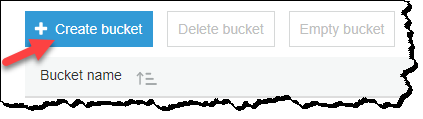
-
In the Bucket name field, type a unique DNS-compliant name for your new bucket. (The example screen shot uses the bucket name admin-created. You cannot use this name because S3 bucket names must be unique.) Create your own bucket name using the follow naming guidelines:
-
The name must be unique across all existing bucket names in Amazon S3.
-
After you create the bucket you cannot change the name, so choose wisely.
-
Choose a bucket name that reflects the objects in the bucket because the bucket name is visible in the URL that points to the objects that you're going to put in your bucket.
For information about naming buckets, see Rules for Bucket Naming in the Amazon Simple Storage Service Developer Guide.
-
-
For Region, choose US West (Oregon) as the region where you want the bucket to reside.
-
Choose Create.
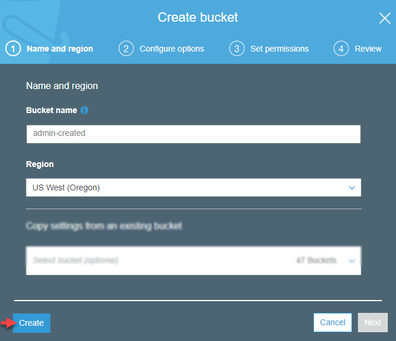
- You've created a bucket in Amazon S3.
Add an Object to a BucketLink
Now that you've created a bucket, you're ready to add an object to it. An object can be any kind of file: a text file, a photo, a video, and so on. To upload an object to a bucket
- In the Bucket name list, choose the name of the bucket that you want to upload your object to.

- Choose Upload.
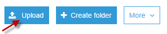
Or you can choose Get started.
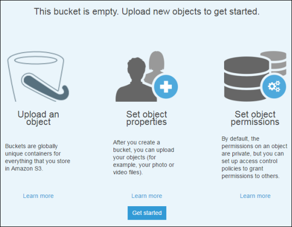
- In the Upload dialog box, choose Add files to choose the file to upload.
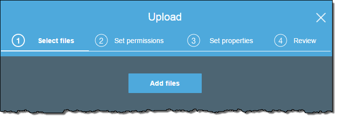
- Choose a file to upload, and then choose Open.

- Choose Upload.
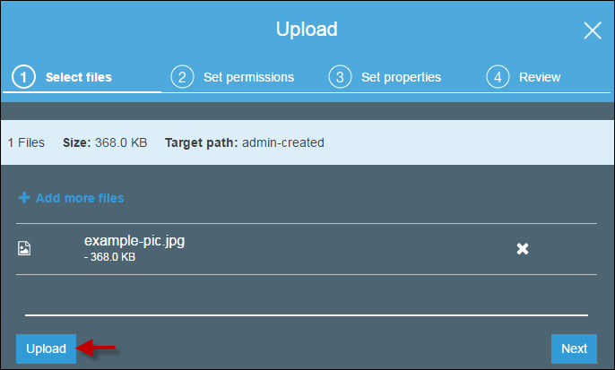
View an ObjectLink
Now that you've added an object to a bucket, you can view information about your object and download the object to your local computer.
To download an object from a bucket
- In the Bucket name list, choose the name of the bucket that you created.

- In the Name list, select the check box next to the object that you uploaded, and then choose Download on the object overview panel.
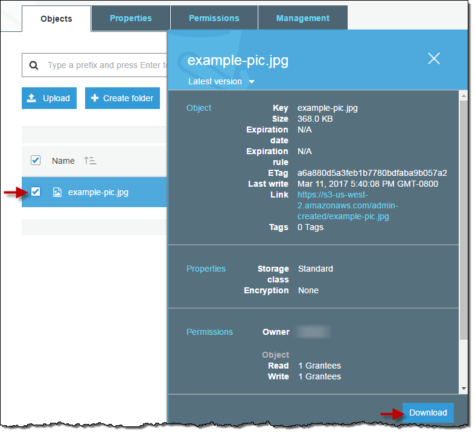
### Move an Object
So far you've added an object to a bucket and downloaded the object. Now we create a folder and move the object into the folder by copying and pasting the object. To copy an object
-
In the Bucket name list, choose the name of the bucket that you created.

-
Choose Create Folder, type favorite-pics for the folder name, choose None for the encryption setting for the folder object and then choose Save.
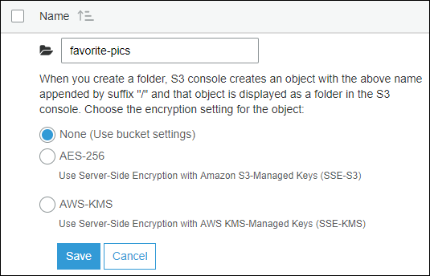
-
In the Name list, select the check box next to the object that you want to copy, choose More, and then choose Copy.
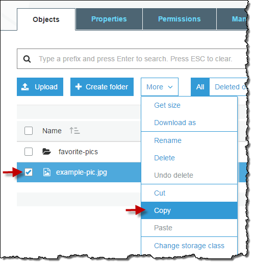
-
In the Name list, choose the name of the folder favorite-pics.
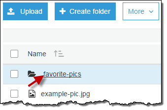
-
Choose More, and then choose Paste.
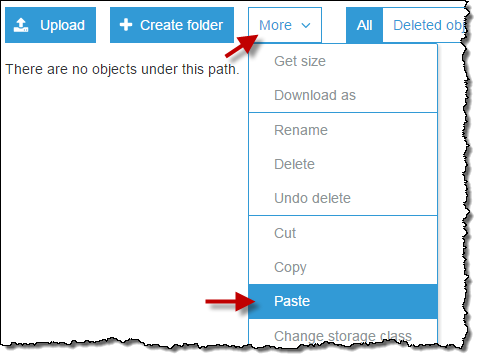
-
Choose Paste.
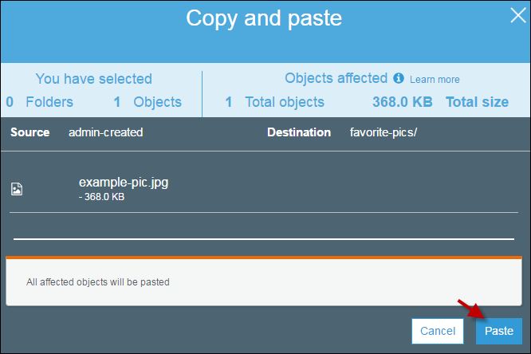
-
Delete an Object and BucketLink
If you no longer need to store the object that you uploaded and made a copy of while going through this guide, you should delete the objects to prevent further charges. You can delete the objects individually. Or you can empty a bucket, which deletes all the objects in the bucket without deleting the bucket. You can also delete a bucket and all the objects contained in the bucket. However, if you want to continue to use the same bucket name, don't delete the bucket. We recommend that you empty the bucket and keep it. After a bucket is deleted, the name becomes available to reuse, but the name might not be available for you to reuse for various reasons. For example, it might take some time before the name can be reused and some other account could create a bucket with that name before you do. To delete an object from a bucket
- In the Bucket name list, choose the name of the bucket that you want to delete an object from.

- In the Name list, select the check box next to the object that you want to delete, choose More, and then choose Delete.
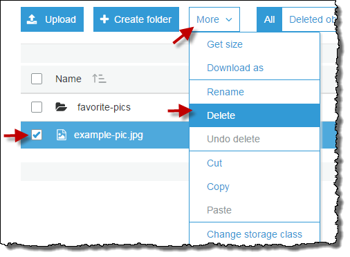
-
In the Delete objects dialog box, verify that the name of the object you selected for deletion is listed, and then choose Delete.
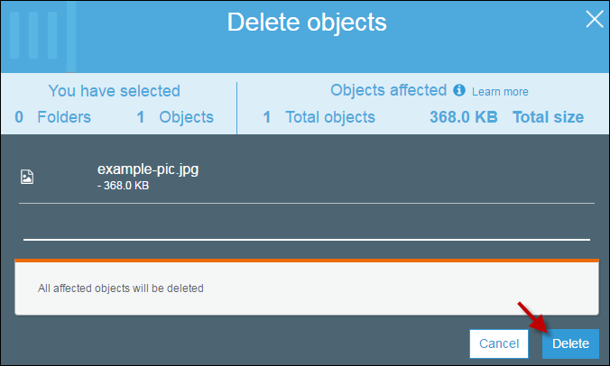
You can empty a bucket, which deletes all the objects in the bucket without deleting the bucket.
To empty a bucket
- In the Bucket name list, choose the bucket icon next to the name of the bucket that you want to empty and then choose Empty bucket.

- In the Empty bucket dialog box, type the name of the bucket for confirmation and then choose Confirm.
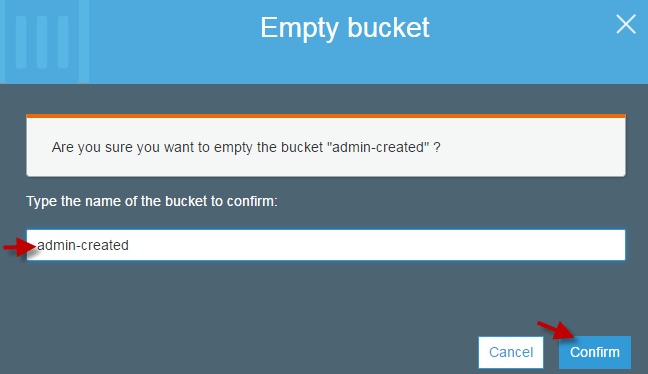
You can delete a bucket and all the objects contained in the bucket.
To delete a bucket
-
In the Bucket name list, choose the bucket icon next to the name of the bucket that you want to delete and then choose Delete bucket
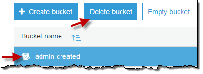
-
In the Delete bucket dialog box, type the name of the bucket for delete confirmation and then choose Confirm.
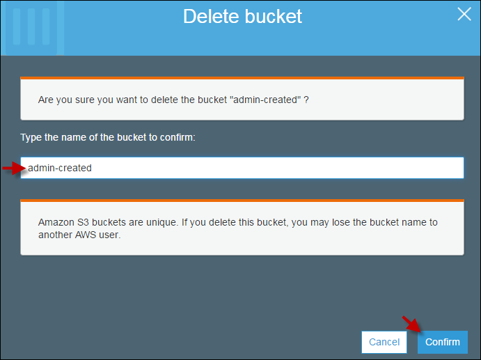
Case StudyLink
Let’s understand the 3 storage classes with a “health-care” use case:
- Amazon S3 Standard for frequent data access. This is suitable for performance sensitive use cases where the latency should be kept low. e.g. in a hospital, frequently accessed data will be the data of admitted patients, which should be retrieved quickly.
-
**Amazon S3 Standard* for infrequent data access: **This is suitable for use cases where the data is long lived and less frequently accessed, i.e for data archival but still expects high performance. e.g. in the same hospital, people who have been discharged, their records/data will not be needed on a daily basis, but if they return with any complication, their discharge summary should be retrieved quickly.
-
Amazon Glacier Suitable for use cases where the data is to be archived, and high performance is not required, it has a lower cost than the other two services.e.g. in the hospital, patients’ test reports, prescriptions, MRI, X Ray, Scan docs etc. that are older than a year will not be needed in the daily run and even if it is required, lower latency is not needed.
Specification Snapshot: Storage Classes
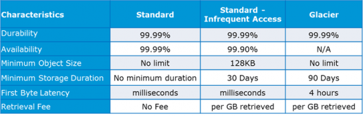
CLEVER SAFE STORAGELink
Cloud storage systems have unique challenges that legacy storage technologies cannot address. Storage technologies based on RAID and replication are not well suited for cloud infrastructures because they don’t scale easily to the exabyte level. Legacy storage technologies rely on redundant copies to increase reliability, resulting in systems that are not easily manageable, chew up bandwidth, and are not cost effective.
Cleversafe’s unique cloud storage platform—based on company technology trademarked under the name Dispersed Storage—divides data into slices and stores them in different geographic locations on hardware appliances. The algorithms used to divide the data are comparable to the concept of parity—but with much more sophistication—because they allow the total data to be reconstituted from a subset. For instance, you may store the data in 12 locations, any 8 of which are enough to restore it completely. This technology, known as information dispersal, achieves geographic redundancy and high availability without expensive replication of the data.
In April 2008, Cleversafe embodied its dispersal technology in hardware appliances that provide a front-end to the user using standard protocols such as REST APIs or iSCSI. The appliances take on the task of splitting and routing the data to storage sites, and merely increase the original file size by 1.3 to 1.6 times, versus 3 times in a replicated system.
Companies are using Cleversafe’s Dispersed Storage appliances to build public and private cloud storage as a backend infrastructure to Software as a Service. Dispersed Storage easily fulfills the characteristics of a cloud infrastructure since it provides storage on demand and accessibility anywhere.
Dispersal also achieves higher levels of security within the cloud without necessarily needing encryption, because each slice contains too little information to be useful. This unique architecture helps people satisfy their concern over their data being outside of their immediate control, which often becomes a barrier to storage decisions. While a lost backup tape contains a full copy of data, access to a single appliance using Dispersed Storage results in no data breach.
Additionally, Dispersed Storage is massively scalable and designed to handle petabytes of data. By adding servers into the storage cloud with automated storage discovery, the total storage of the system can easily grow, and performance can be scaled by simply adding additional appliances.
Virtualization tools enable easy deployment and on-demand provisioning. All of these capabilities streamline efforts for storage administrators.
Dispersed Storage is also designed to store and distribute large objects, the cornerstone of our media-intensive society that has become dependent on videos and images in every aspect of life. Dispersal is inherently designed for content distribution by naturally incorporating load balancing through the multitude of access choices for selecting the slices used to reconstruct the original file. This means companies do not have to deal with or pay for implementing a separate content delivery network for their stored data.
Dispersed Storage offers a novel and needed approach to cloud storage, and will be significant as cloud storage matures and displaces traditional storage methods.
Amazon Web Services - Elastic Block Store(EBS)Link
Amazon Elastic Block Store (EBS) is a block storage system used to store persistent data. Amazon EBS is suitable for EC2 instances by providing highly available block level storage volumes. It has three types of volume, i.e. General Purpose (SSD), Provisioned IOPS (SSD), and Magnetic. These three volume types differ in performance, characteristics, and cost.
EBS Volume TypesLink
Following are the three types.
EBS General Purpose (SSD)Link
This volume type is suitable for small and medium workloads like Root disk EC2 volumes, small and medium database workloads, frequently logs accessing workloads, etc. By default, SSD supports 3 IOPS (Input Output Operations per Second)/GB means 1 GB volume will give 3 IOPS, and 10 GB volume will give 30 IOPS. Its storage capacity of one volume ranges from 1 GB to 1 TB. The cost of one volume is $0.10 per GB for one month.
Provisioned IOPS (SSD)Link
This volume type is suitable for the most demanding I/O intensive, transactional workloads and large relational, EMR and Hadoop workloads, etc. By default, IOPS SSD supports 30 IOPS/GB means 10GB volume will give 300 IOPS. Its storage capacity of one volume ranges from 10GB to 1TB. The cost of one volume is $0.125 per GB for one month for provisioned storage and $0.10 per provisioned IOPS for one month.
EBS Magnetic VolumesLink
It was formerly known as standard volumes. This volume type is suitable for ideal workloads like infrequently accessing data, i.e. data backups for recovery, logs storage, etc. Its storage capacity of one volume ranges from 10GB to 1TB. The cost of one volume is $0.05 per GB for one month for provisioned storage and $0. 05 per million I/O requests.
Volumes Attached to One InstanceLink
Each account will be limited to 20 EBS volumes. For a requirement of more than 20 EBS volumes, contact Amazon’s Support team. We can attach up to 20 volumes on a single instance and each volume ranges from 1GB to 1TB in size.
In EC2 instances, we store data in local storage which is available till the instance is running. However, when we shut down the instance, the data gets lost. Thus, when we need to save anything, it is advised to save it on Amazon EBS, as we can access and read the EBS volumes anytime, once we attach the file to an EC2 instance.
Amazon EBS BenefitsLink
- Reliable and secure storage − Each of the EBS volume will automatically respond to its Availability Zone to protect from component failure.
- Secure − Amazon’s flexible access control policies allows to specify who can access which EBS volumes. Access control plus encryption offers a strong defense-in-depth security strategy for data.
- Higher performance − Amazon EBS uses SSD technology to deliver data results with consistent I/O performance of application.
- Easy data backup − Data backup can be saved by taking point-in-time snapshots of Amazon EBS volumes.
How to Set Up Amazon EBS?Link
Step 1 − Create Amazon EBS volume using the following steps.
-
Open the Amazon EC2 console.
-
Select the region in the navigation bar where the volume is to be created.
-
In the navigation pane, select Volumes, then select Create Volume.
-
Provide the required information like Volume Type list, Size, IOPS, Availability zone, etc. then click the Create button.
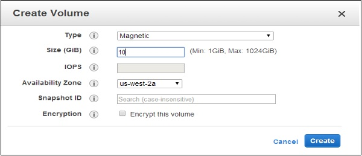
The volume names can be seen in the volumes list.
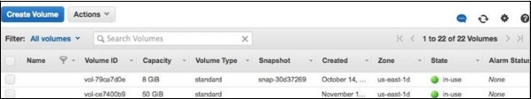
Step 2 − Store EBS Volume from a snapshot using the following steps.
- Repeat the above 1 to 4 steps to create volume.
- Type snapshot ID in the Snapshot ID field from which the volume is to be restored and select it from the list of suggested options.
- If there is requirement for more storage, change the storage size in the Size field.
- Select the Yes Create button.
Step 3 − Attach EBS Volume to an Instance using the following steps.
- Open the Amazon EC2 console.
- Select Volumes in the navigation pane. Choose a volume and click the Attach Volume option.
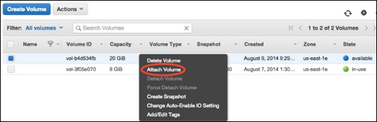
- An Attach Volume dialog box will open. Enter the name/ID of instance to attach the volume in the Instance field or select it from the list of suggestion options.
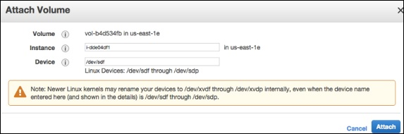
-
Click the Attach button.
-
Connect to instance and make the volume available.
Step 4 − Detach a volume from Instance.
-
First, use the command /dev/sdh in cmd to unmount the device.
-
Open the Amazon EC2 console.
-
In the navigation pane, select the Volumes option.
-
Choose a volume and click the Detach Volumes option.
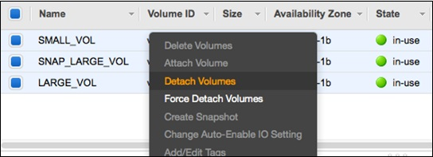
- A confirmation dialog box opens. Click the Yes, Detach button to confirm.
Amazon Web Services - Storage GatewayLink
AWS Storage Gateway provides integration between the on-premises IT environment and the AWS storage infrastructure. The user can store data in the AWS cloud for scalable, data security features and cost-efficient storage.
AWS Gateway offers two types of storage, i.e. volume based and tape based.

Volume GatewaysLink
This storage type provides cloud-backed storage volumes which can be mount as Internet Small Computer System Interface (iSCSI) devices from on-premises application servers.
Gateway-cached VolumesLink
AWS Storage Gateway stores all the on-premises application data in a storage volume in Amazon S3. Its storage volume ranges from 1GB to 32 TB and up to 20 volumes with a total storage of 150TB. We can attach these volumes with iSCSI devices from on-premises application servers. It is of two categories −
Cache Storage DiskLink
Every application requires storage volumes to store their data. This storage type is used to initially store data when it is to be written to the storage volumes in AWS. The data from the cache storage disk is waiting to be uploaded to Amazon S3 from the upload buffer. The cache storage disk keeps the most recently accessed data for low-latency access. When the application needs data, the cache storage disk is first checked before checking Amazon S3.
There are few guidelines to determine the amount of disk space to be allocated for cache storage. We should allocate at least 20% of the existing file store size as cache storage. It should be more than the upload buffer.
Upload buffer disk − This type of storage disk is used to store the data before it is uploaded to Amazon S3 over SSL connection. The storage gateway uploads the data from the upload buffer over an SSL connection to AWS.
Snapshots − Sometimes we need to back up storage volumes in Amazon S3. These backups are incremental and are known as snapshots. The snapshots are stored in Amazon S3 as Amazon EBS snapshots. Incremental backup means that a new snapshot is backing up only the data that has changed since the last snapshot. We can take snapshots either at a scheduled interval or as per the requirement.
Gateway-stored VolumesLink
When the Virtual Machine (VM) is activated, gateway volumes are created and mapped to the on-premises direct-attached storage disks. Hence, when the applications write/read the data from the gateway storage volumes, it reads and writes the data from the mapped on-premises disk.
A gateway-stored volume allows to store primary data locally and provides on-premises applications with low-latency access to entire datasets. We can mount them as iSCSI devices to the on-premises application servers. It ranges from 1 GB to 16 TB in size and supports up to 12 volumes per gateway with a maximum storage of 192 TB.
Gateway-Virtual Tape Library (VTL)Link
This storage type provides a virtual tape infrastructure that scales seamlessly with your business needs and eliminates the operational burden of provisioning, scaling, and maintaining a physical tape infrastructure. Each gateway-VTL is preconfigured with media changer and tape drives, that are available with the existing client backup applications as iSCSI devices. Tape cartridges can be added later as required to archive the data.
Few terms used in Architecture are explained below.
Virtual Tape − Virtual tape is similar to a physical tape cartridge. It is stored in the AWS cloud. We can create virtual tapes in two ways: by using AWS Storage Gateway console or by using AWS Storage Gateway API. The size of each virtual tape is from 100 GB to 2.5 TB. The size of one gateway is up to 150 TB and can have maximum 1500 tapes at a time.
Virtual Tape Library (VTL) − Each gateway-VTL comes with one VTL. VTL is similar to a physical tape library available on-premises with tape drives. The gateway first stores data locally, then asynchronously uploads it to virtual tapes of VTL.
Tape Drive − A VTL tape drive is similar to a physical tape drive that can perform I/O operations on tape. Each VTL consists of 10 tape drives that are used for backup applications as iSCSI devices.
Media Changer − A VTL media changer is similar to a robot that moves tapes around in a physical tape library's storage slots and tape drives. Each VTL comes with one media changer that is used for backup applications as iSCSI device.
Virtual Tape Shelf (VTS) − A VTS is used to archive tapes from gateway VTL to VTS and vice-a-versa.
Archiving Tapes − When the backup software ejects a tape, the gateway moves the tape to the VTS for storage. It is used data archiving and backups.
Retrieving Tapes − Tapes archived to the VTS cannot be read directly so to read an archived tape, we need to retrieve the tape from gateway VTL either by using the AWS Storage Gateway console or by using the AWS Storage Gateway API.
Amazon Web Services - CloudFrontLink
CloudFront is a CDN (Content Delivery Network). It retrieves data from Amazon S3 bucket and distributes it to multiple datacenter locations. It delivers the data through a network of data centers called edge locations. The nearest edge location is routed when the user requests for data, resulting in lowest latency, low network traffic, fast access to data, etc.
How AWS CloudFront Delivers the Content?Link
AWS CloudFront delivers the content in the following steps.
Step 1 − The user accesses a website and requests an object to download like an image file.
Step 2 − DNS routes your request to the nearest CloudFront edge location to serve the user request.
Step 3 − At edge location, CloudFront checks its cache for the requested files. If found, then returns it to the user otherwise does the following −
- First CloudFront compares the request with the specifications and forwards it to the applicable origin server for the corresponding file type.
- The origin servers send the files back to the CloudFront edge location.
- As soon as the first byte arrives from the origin, CloudFront starts forwarding it to the user and adds the files to the cache in the edge location for the next time when someone again requests for the same file.
Step 4 − The object is now in an edge cache for 24 hours or for the provided duration in file headers. CloudFront does the following −
- CloudFront forwards the next request for the object to the user’s origin to check the edge location version is updated or not.
- If the edge location version is updated, then CloudFront delivers it to the user.
- If the edge location version is not updated, then origin sends the latest version to CloudFront. CloudFront delivers the object to the user and stores the latest version in the cache at that edge location.
Features of CloudFrontLink
Fast − The broad network of edge locations and CloudFront caches copies of content close to the end users that results in lowering latency, high data transfer rates and low network traffic. All these make CloudFront fast.
Simple − It is easy to use.
Can be used with other AWS Services − Amazon CloudFront is designed in such a way that it can be easily integrated with other AWS services, like Amazon S3, Amazon EC2.
Cost-effective − Using Amazon CloudFront, we pay only for the content that you deliver through the network, without any hidden charges and no up-front fees.
Elastic − Using Amazon CloudFront, we need not worry about maintenance. The service automatically responds if any action is needed, in case the demand increases or decreases.
Reliable − Amazon CloudFront is built on Amazon’s highly reliable infrastructure, i.e. its edge locations will automatically re-route the end users to the next nearest location, if required in some situations.
Global − Amazon CloudFront uses a global network of edge locations located in most of the regions.
How to Set Up AWS CloudFront?Link
AWS CloudFront can be set up using the following steps.
Step 1 − Sign in to AWS management console using the following link − https://console.aws.amazon.com/
Step 2 − Upload Amazon S3 and choose every permission public. (How to upload content to S3 bucket is discussed in chapter 14)
Step 3 − Create a CloudFront Web Distribution using the following steps.
-
Open CloudFront console using the following link − https://console.aws.amazon.com/cloudfront/
-
Click the Get Started button in the web section of Select a delivery method for your content page.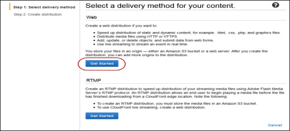
-
Create Distribution page opens. Choose the Amazon S3 bucket created in the Origin Domain Name and leave the remaining fields as default.
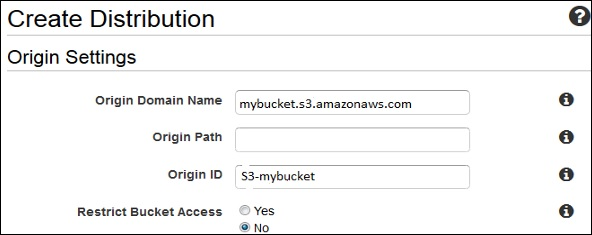
- Default Cache Behavior Settings page opens. Keep the values as default and move to the next page.
- A Distribution settings page opens. Fill the details as per your requirement and click the Create Distribution button.
- The Status column changes from In Progress to Deployed. Enable your distribution by selecting the Enable option. It will take around 15 minutes for the domain name to be available in the Distributions list.
Test the LinksLink
After creating distribution, CloudFront knows the location of Amazon S3 server and the user knows the domain name associated with the distribution. However, we can also create a link to Amazon S3 bucket content with that domain name and have CloudFront serve it. This helps save a lot of time.
Following are the steps to link an object −
Step 1 − Copy the following HTML code to a new file and write the domain-name that CloudFront assigned to the distribution in the place of domain name. Write a file name of Amazon S3 bucket in the place of object-name.
<html> <head>CloudFront Testing link</head> <body> <p>My Cludfront.</p> <p><img src = "http://domain-name/object-name" alt = "test image"/> </body> </html>
Step 2 − Save the text in a file with .html extension.
Step 3 − Open the web page in a browser to test the links to see if they are working correctly. If not, then crosscheck the settings.